Funktionsbeschreibung
Erstellung des Inventurauftrags
Es wird ein neuer Inventurauftrag erstellt. Über die Standardfunktionalität unter "Vorbereiten -> Berechnen -> Zeilen berechnen..." werden die Inventurauftragszeilen aufgebaut.
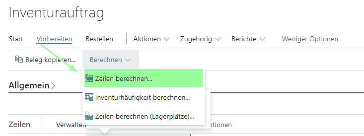
Erstellen einer Inventurerfassung
Über die Standardfunktion "Neue Erfassung erstellen" kann zu dem Inventurauftrag eine neue Erfassung erstellt werden. Soll pro erwarteter Inventurverfolgungszeile eine neue Inventurerfassungszeile erstellt werden, muss bei Ausführen der Funktion der Punkt "Neue Zeile für jede Inventurverfolgung" aktiviert sein.
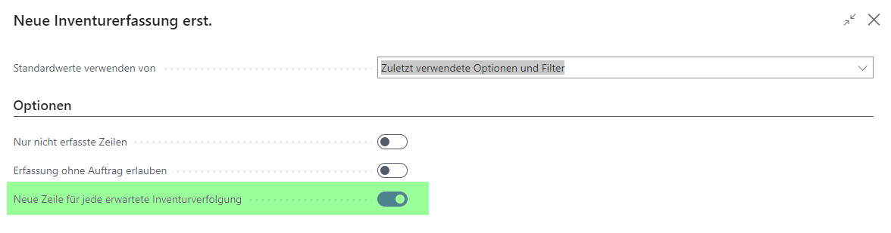
Nach der Bestätigung durch "OK" wird eine neue Inventurerfassung erstellt. Wurde die zuvor genannte Option aktiviert, wird je erwarteter Inventurverfolgungszeile eine Inventurerfassungszeile abgegrenzt durch Chargennr./Seriennr. erstellt.
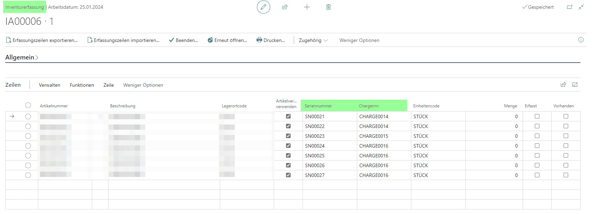
Innerhalb der Inventurerfassung ist es nicht möglich auf ggfs. hinterlegte Dimensionen zuzugreifen.
Beenden einer Inventurerfassung
Der Aufruf "Alle Abweichenden Verfolgungszeilen" wurde im Kopf des Inventurauftrags im Aktionsmenü unter "Zugehörig" eingebaut. Der Aufruf wird ohne Filter auf eine Inventurauftragszeile eingebaut. Dieser Aufruf steht standardmäßig auch auf Zeilenebene zur Verfügung und ist dort auf die Inventurauftragszeilen gefiltert.
Werden innerhalb der Inventurerfassungszeilen zur Inventurauftragszeile abweichende Werte erfasst und der Status der Inventurerfassung auf "Beendet" gesetzt, werden diese Zeilen in die abweichenden Verfolgungszeilen des Inventurauftrags geschrieben.
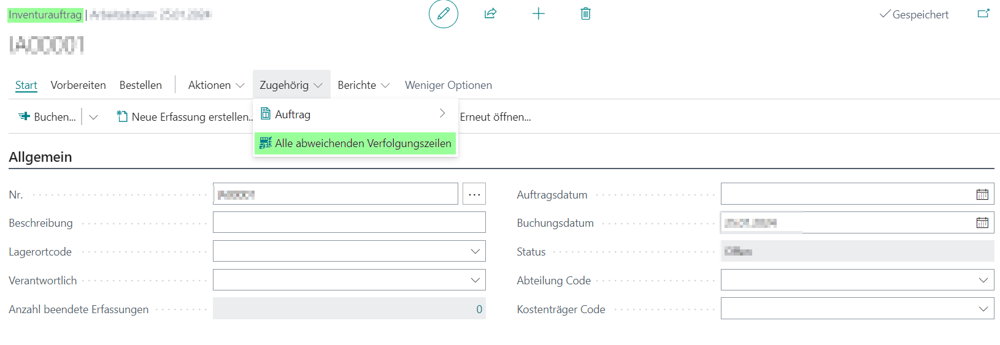
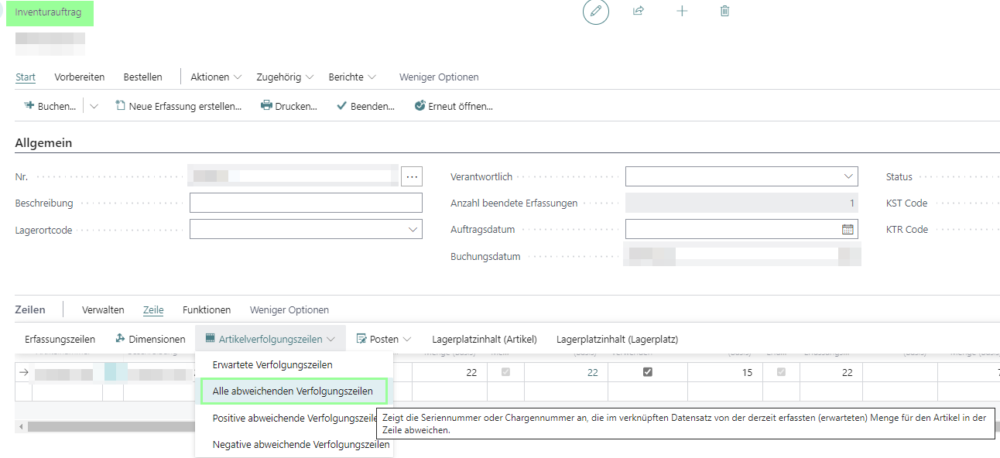
Auf der sich öffnenden Seite werden die abweichend erfassten Zeilen inklusive ihrer Dimensionen angezeigt.
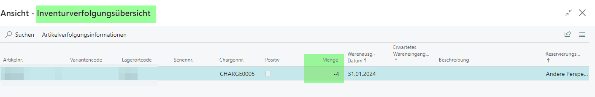
Buchen mit Postendimensionen
Der Aufruf erfolgt im gebuchten Inventurauftrag auf Zeilenebene über "Zugehörig -> Dimensionen". Dimensionen werden nur erzeugt, wenn bei der Einrichtung der Haken bei "Dimensionen von Posten" gesetzt ist.
Es wurden neue Artikelposten mit unterschiedlichen Kriterien und abweichenden Dimensionen erzeugt. Sofern ein Artikel nicht verfolgungspflichtig ist, werden die Dimensionen in die Inventurauftragszeile geschrieben.
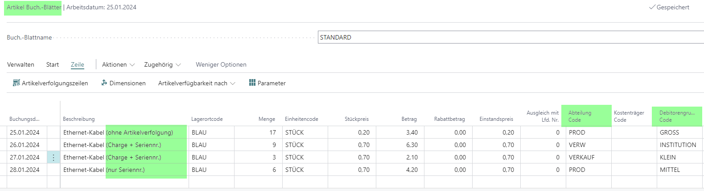
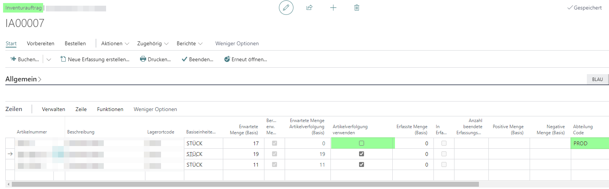
Die gebuchten Inventurauftragszeilen werden um die Dimensionen des Ursprungspostens ergänzt, auch bei nicht verfolgungspflichtigen Artikeln. Dabei wird folgender Artikelposten berücksichtigt:
Artikelnummer = Artikelnummer der Inventurauftragszeile
Lagerort = Lagerort der Inventurauftragszeile
Chargennummer/Seriennummer = Chargennummer/Seriennummer der
Inventurverfolgungszeile
- Restmenge <> 0
Existieren mehrere Artikelposten im Filter, wird nur der letzte Artikelposten, sortiert nach "Lfd. Nr.", verwendet.
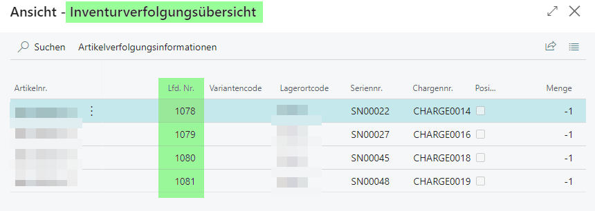
Erfassungsunterstützung "Vorhanden"
In der Inventurerfassungszeile wurde ein neues Kennzeichen "Vorhanden" eingebaut. Der Haken ist standardmäßig nicht gesetzt.
Wird der Haken gesetzt, wird der Wert aus dem Feld "Menge (Basis)" aus der Inventurverfolgungszeile in das Feld "Menge" der Inventurerfassungszeile automatisch übernommen. Wenn bereits ein Wert in dem Feld "Menge" erfasst war und das Kennzeichen "Vorhanden" wird nachträglich gesetzt, wird der manuell erfasste Wert überschrieben.
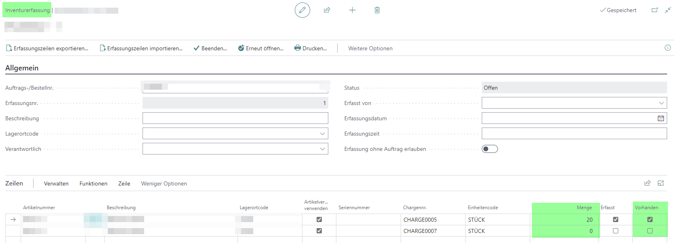
Wird der Haken bei "Vorhanden" nun wieder entfernt, wird automatisch der Wert im Feld "Menge" der Inventurerfassungszeile auf 0 gesetzt.
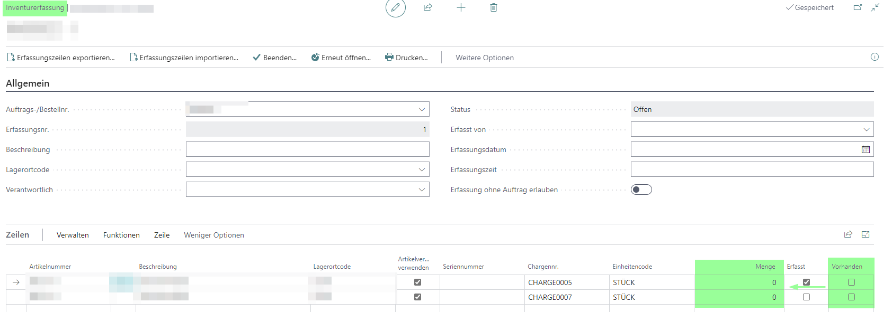
Fehlerhandling
Für das Fehlerhandling wurde eine neue Funktion "Teste Dimensionen" im Inventurauftrag unter "Aktionen -> Buchen" eingebaut.
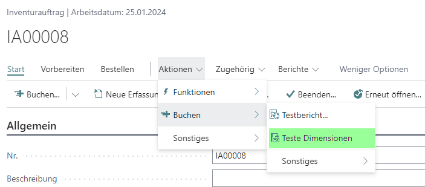
Wird diese Funktion aufgerufen öffnet sich eine neue Seite "Fehlermeldungen". Sofern Fehlermeldungen vorhanden sind, werden diese dort detailliert angezeigt.

Zusätzlich wurde in den Inventurauftragszeilen eine neue Spalte "Zeilenfehler" eingebaut. Das Feld ist nicht editierbar.
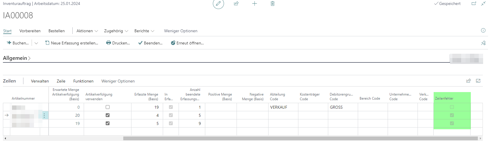
Dimensionsfehler beim Erstellen der Inventurauftragszeile
Tritt bei Ausführung der Funktion "Buchen" im Inventurauftrag ein Fehler der Dimensionen auf, weil bspw. eine Dimension bzw. ein Dimensionswert gesperrt ist, erfolgt beim Buchen des Inventurauftrags eine Fehlermeldung.
Im ersten Schritt wurden neue Artikelposten mit unterschiedlichen Kriterien und abweichenden Dimensionen erzeugt.
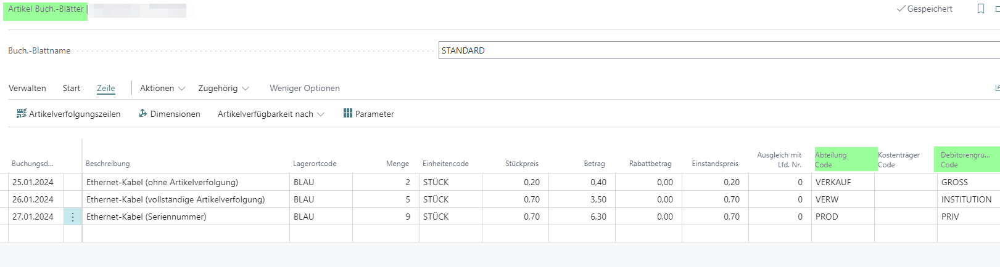
Dimensionswert gesperrt
Bevor die Inventurauftragszeilen berechnet werden, wird ein Dimensionswert gesperrt.
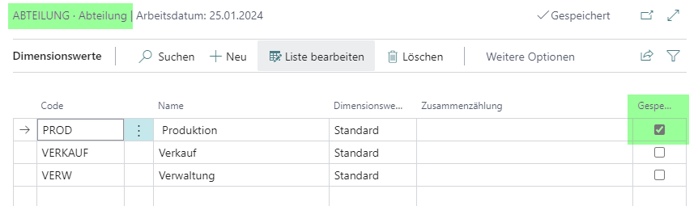
Im Inventurauftrag werden nun die Zeilen berechnet und die Inventurerfassung erstellt. Wird der Inventurauftrag nun gebucht, erfolgt eine Fehlermeldung zum gesperrten Dimensionswert.
Dimension gesperrt
Bevor die Inventurauftragszeilen berechnet werden, wird eine Dimension gesperrt.
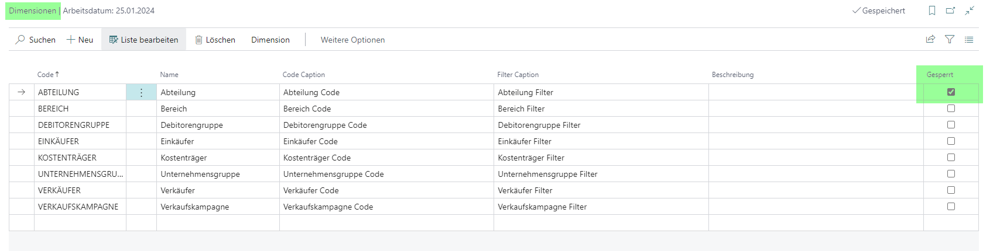
Im Inventurauftrag werden nun die Zeilen berechnet und die Inventurerfassung erstellt. Wird der Inventurauftrag nun gebucht, erfolgt eine Fehlermeldung zur gesperrten Dimension.
Fehlerhandling in den Abweichenden Inventurverfolgungszeilen
Um möglichst schnell Dimensionsfehler beim Buchen des Inventurauftrages beheben zu können, können alle Dimension innerhalb der abweichenden Inventurverfolgungszeilen angepasst werden.
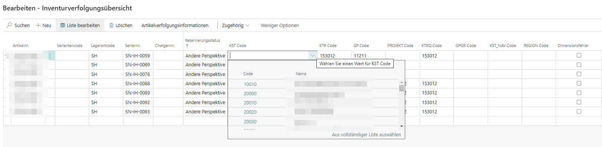